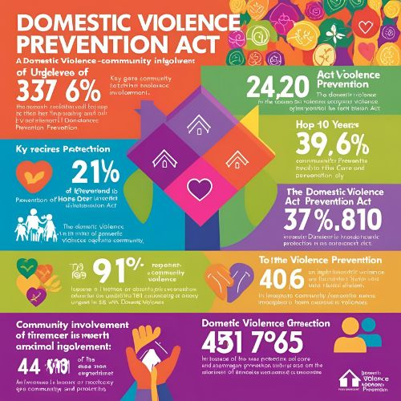
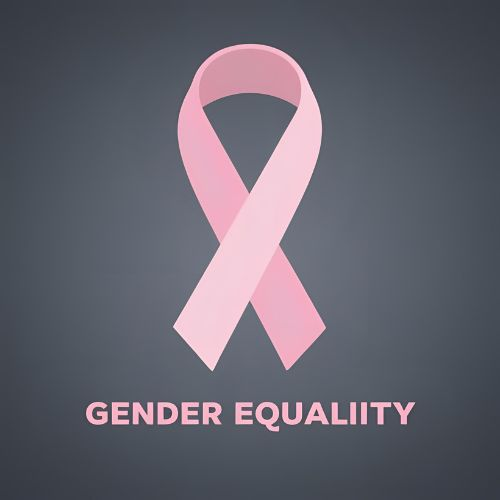

⚖️ 政策與法律
了解並利用現有的法律來保護你的權益，這些法律專為防止性別暴力與促進女性平等而設立。
法律背景與政策概覽
瞭解如何透過現行法律來保護自己及他人，特別是在家庭暴力、性別平等與性騷擾防治等方面的法律保障。

家庭暴力防治法
介紹關於家庭暴力防治的法律框架，包括保護令的申請流程。

性別平等法
強調性別平等的法律保障，促進女性在各領域的公平權利。
性騷擾防治法
介紹如何處理職場及公共場所的性騷擾，並保障受害者的權利。
如何運用法律保護自己
- 申請保護令： 向法院申請保護令，以防止施暴者接近你或再次傷害你。
- 報警與尋求支援： 如有危險，立即報警，並聯繫當地的法律支援機構或社會服務單位。
- 諮詢律師： 聯繫專業律師，了解你所擁有的法律權益以及可獲得的法律援助服務。